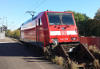

Lukas Wiest
Lebenslauf:
| Persönliche Daten | |
|---|---|
| Name | Lukas Wiest |
| 62wilu1bif@hft-stuttgart.de | |
| GnuPG Schlüssel-Kennung | 0xBD489347 |
| Threema-ID | J55WWV8S |
| Schulische Laufbahn | |
| 2001 - 2005 | Grundschule |
| 2005 - 2010 | Gymnasium |
| 2010 - 2012 | Realschule |
| 1. Schulabschluss (2012) | Mittlere Reife |
| 2012 - 2015 | Berufsschule |
| 2. Schulabschluss (2015) | Berufsausbildung |
| 2013 - 2016 | Abendschule |
| 3. Schulabschluss | Fachhochschulreife |
| seit 2016 |
Hochschule nächster angestrebter Abschluss: B.Sc. Informatik |
| Berufliche Laufbahn | |
| 2010 (1 Woche) |
W.P. CNC-Technik Praktikum Industriemechaniker |
| 2011 (1 Woche) |
S-Bahn Stuttgart Ag Praktikum Industriemechaniker/Eelektroniker für Betriebstechnik |
| 2011 (1 Woche) |
DB Netz Ag Praktikum Fahrdienstleiter |
| 09/2012 - 06/2015 |
DB Regio AG - VB Württemberg Ausbildung zum Eisenbahner im Betriebsdienst Fachrichtung Lokführer und Transport (EiB-L/T) |
| 07/2015 - 09/2016 |
DB Regio AG - VB Württemberg Triebfahrzeugführer Klasse 3 Strecke (Tf) |
| seit 07/2017 |
Bahn Personal und Training GmbH Triebfahrzeugführer Klasse 3 Strecke (Tf) |
| Qualifikationen | |
| Bahnbetrieb |
|
| EDV |
Gute Kenntnisse im Bereich Windows 7 und Ubuntu Grundlegende Kenntnisse im Skripting für kleine Aufgaben Access-Datenbank Alternativ-Software Android Smartphone Java-Programmierung HTML/CSS rudimentär Phython |
Bilderstrecke
 \n\
in Theorie....')"
>
\n\
....und Praxis')"
>
\n\
Bei der Eisenbahn wird das tatsächlich täglich und mit\n\
deutscher Genauigkeit gemacht.
\n\
in Theorie....')"
>
\n\
....und Praxis')"
>
\n\
Bei der Eisenbahn wird das tatsächlich täglich und mit\n\
deutscher Genauigkeit gemacht.\n\ Z.B. Bremsen sollte man können, deshalb wird bevor gefahren wird\n\ erstmal gecheckt, dass es bremst.
\n\ Das üben wir hier.')" > \n\ I.d.R. finden diese aber im normalen Betrieb mit Fahrgästen statt.')" > \n\ Manchmal ist aber auch mal irgendwas gestört, dann muss das dem\n\ Lokführer der fährt, vom Fahrdienstleiter der für die Strecke\n\ zuständig ist, mitgeteilt werden.
\n\ Das passiert schriftlich, in Form eines Befehls.')" > \n\ Begegnung mit der Schwarzwaldbahn von Karlsruhe kommend.')" > \n\ Eigengewicht: 84t
\n\ Länge: 18.9m
\n\ Nennleistung: 5600KW
\n\ Vmax: 160km/h')" > \n\ Dieses Signal ist eine Kombination aus Hauptsignal(oberer rechteckiger Schirm) und Vorsignal (unterer diagonaler Schirm)
\n\ Das Hauptsignal zeigt "Langsamfahrt" und sagt uns, dass ab hier mit höchstens 40km/h gefahren werden darf.
\n\ Das Vorsignal darunter zeigt "halt erwarten" und kündigt uns an, dass das nächste Hauptsignal rot sein wird.')" > \n\ Vom Nordbahnhof Stuttgart kommend, gehts z.B. zu einem Steinbruch bei Schwäbisch Hall
\n\ Die Züge sind 300m-350m lang und 1650t-2000t schwer.')" > \n\ Eigengewicht: 87t
\n\ Länge: 18.9m
\n\ Nennleistung: 6400KW
\n\ Vmax: 160-200km/h (versch. Varianten)
\n\ Auf diesem Bild versammeln sich also 12.800KW, die einem einzelnen Menschen gehorchen.')" >